VR 交互关卡设计《归零》
Render Target 实时污渍擦除 · 非对称双手交互
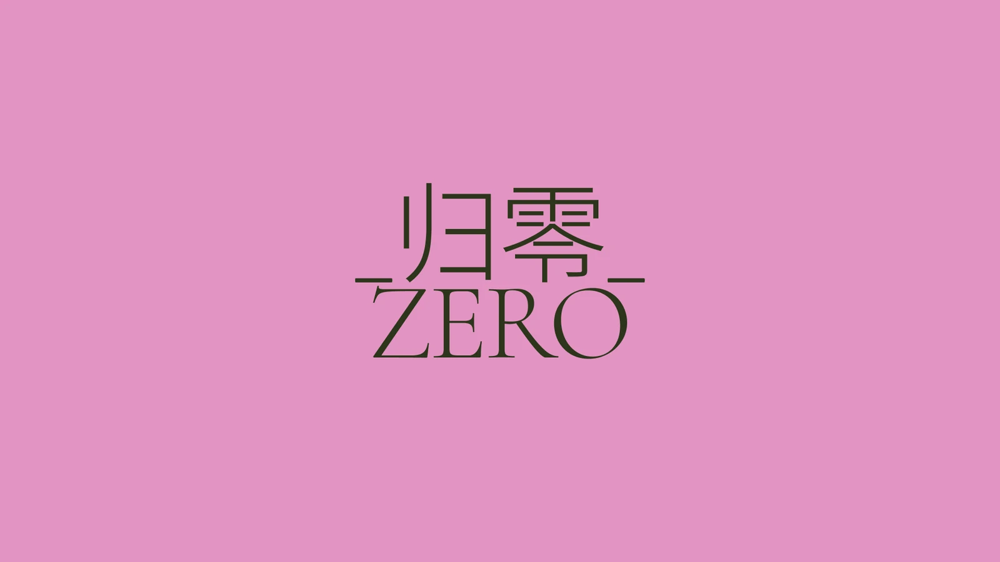
观看视频《归零》· 完整关卡演示
原站视频/B 站实时擦除与双手交互
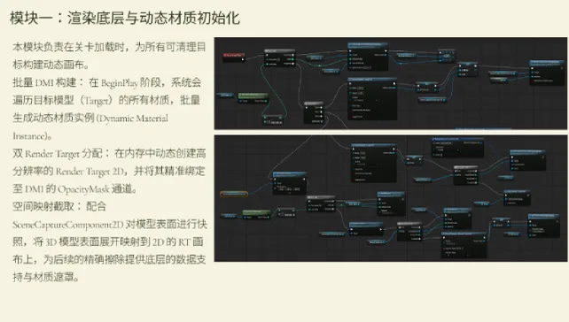
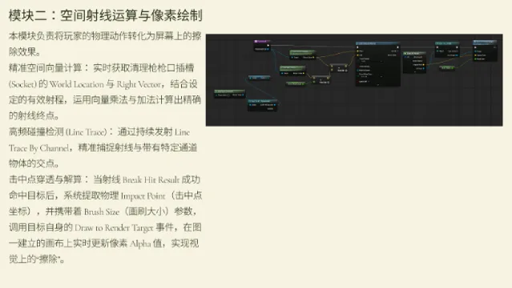
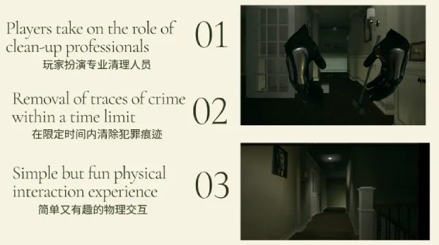
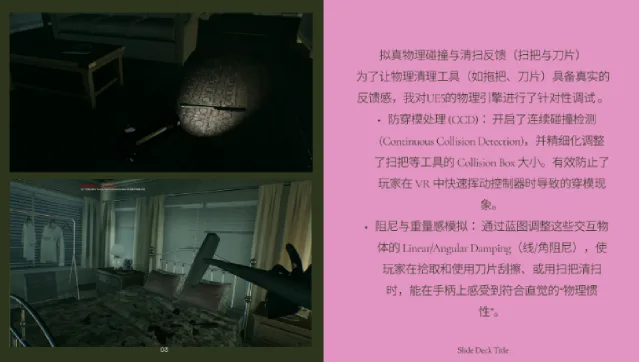


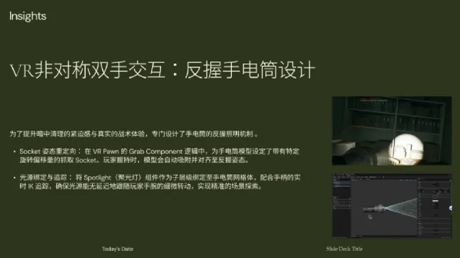
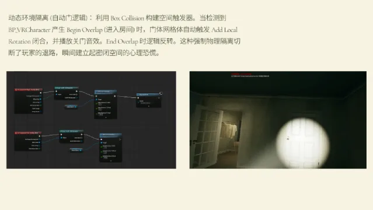
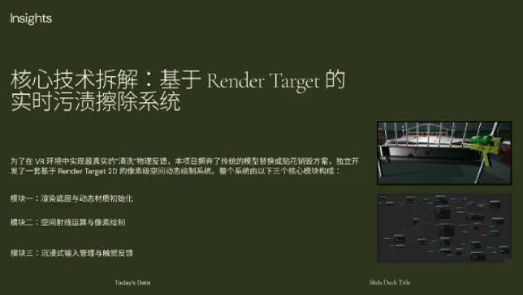
旧版项目记录
一、作品展示视频
核心技术展示
B 站视频基于 Render Target 的实时污渍擦除系统_哔哩哔哩_bilibilib23.tv ↗游戏效果展示
B 站视频【UE5/VR】别留下任何痕迹！我开发了一款“犯罪现场清道夫”高压模拟器_哔哩哔哩bilibili_演示bilibili.com ↗二、作品拆解
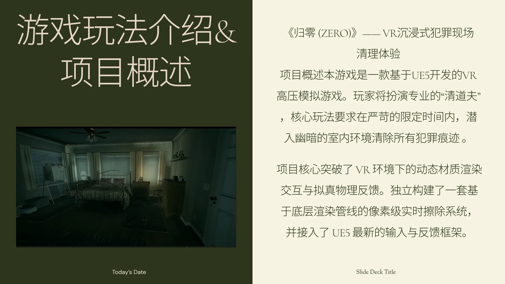
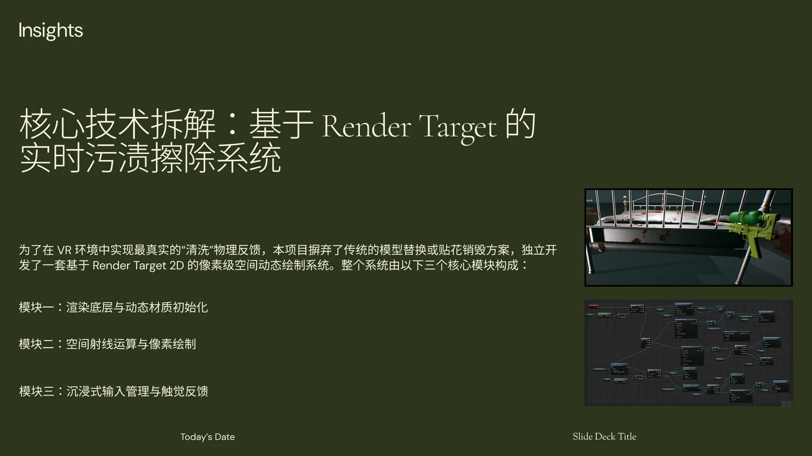

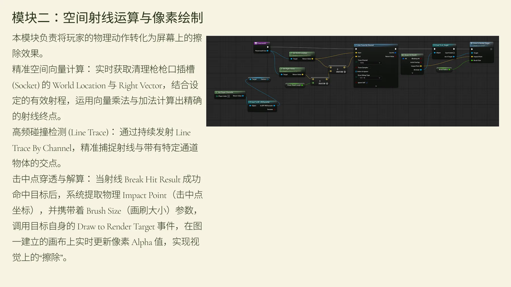

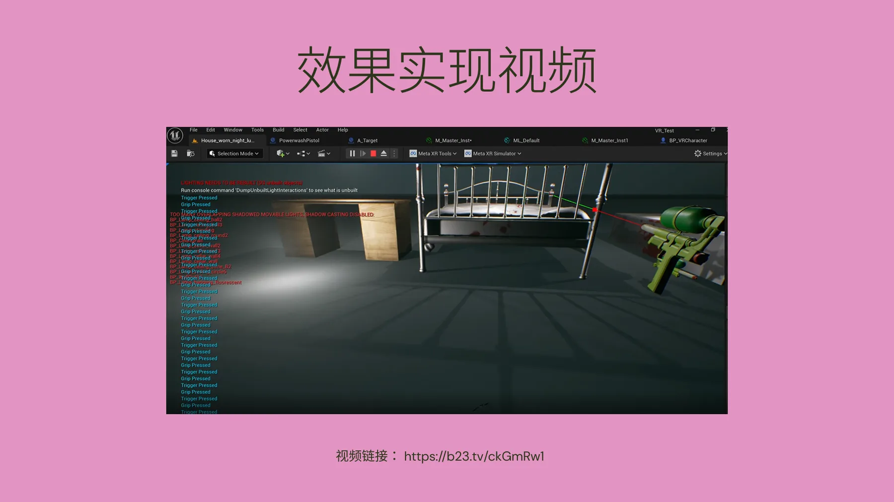


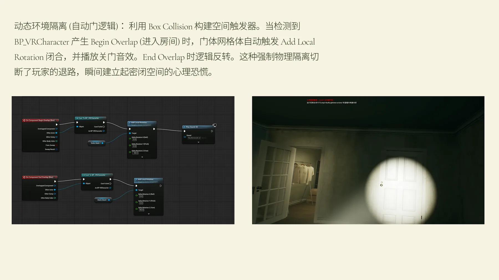


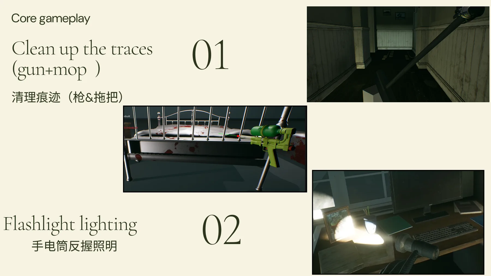

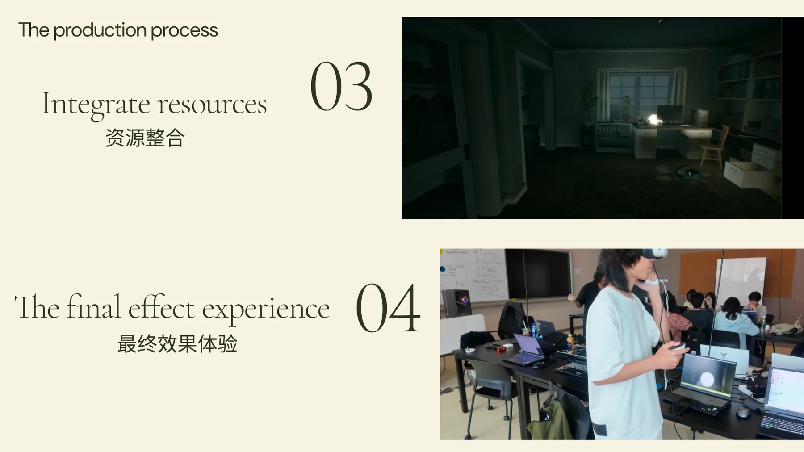
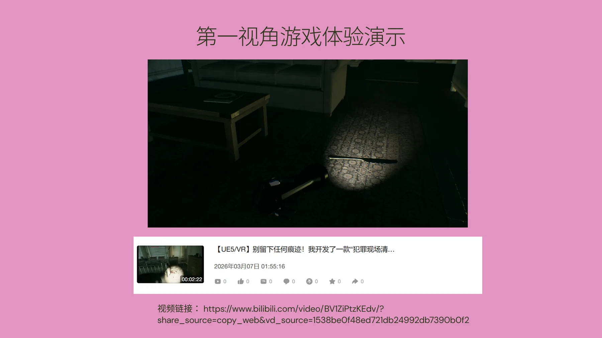
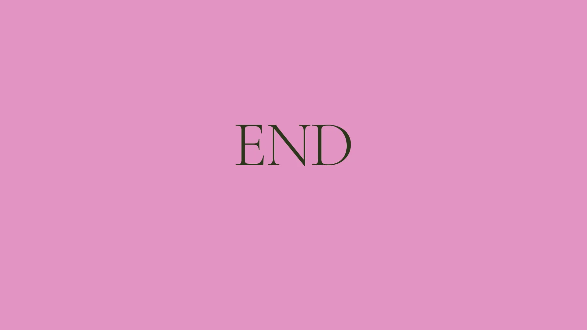